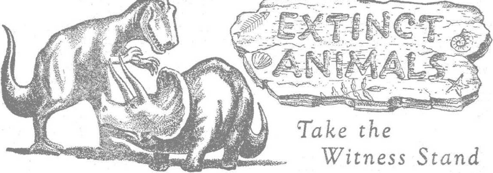

Advertising Hoaxes Exploit Buyers
Sensational appeals attract the millions of spenders* dollars
Why the increasing burden of diseases in modern times?
Progress in air travel continues despite obstacles and crashes
Evidence, circumstantial and direct, in proof
JUNE 22, 1947
SEMIMONTHLY
THE MISSION OF THIS JOURNAL
New* sources that are able to keep you awake io the vital Issues of our times must be unfettered by censorship and selfish interests. "Awake I” has no fetters. It recognizes facts t faces facts, is free to publish facts. It is not bound by political ambitions or obligations; it is unhampered by advertisers whose toes must not be trodden on; it is unprejudiced by .traditional creeds. This journal keeps itself free that it may speak freely to you. But it does not abuse its freedom. It maintains integrity to tnith*
"Awake 1” uses the regular newj channels, but Is not dependent on thenx Its own correspondents are on all continents, in scores of nations. From the four corners of the earth their uncensored, on-the-scenes reports come io you through these columns. This journal1* viewpoint Is not narrow, but is International. It is read in many nations, in many languages, by persons of all ages. Through its pages many fields cf knowledge pass in review—government, commerce, religion, history,* geography, science, social conditions, natural wonders—why, its cover* age is aa broad as the earth and as Idgh as the heavens.
"Awake f pledges itself righteous principles, io exposing hidden foes and subtle dangers, to championing freedom for all, to comforting mourners and strengthening those disheartened by the failures of a delinquent world, reflecting sure hope for the establishment of a righteous New World.
Get acquainted with "Awake!” Keep awake by reading “Awake!”
PuBLismu SkmYmo^thly By WATCH TO IPER DIDW AND T HA CT SOCIETY, INC.
117 Adams Street Brooklyn 1, K. T., U. 8. A.
N. II. Kmomu, PraHdaM Gmawx 3v1tm, Secrcorp
Five cants a copy OM dollar a yo*r
■mittaaaat sbwU .H to <Aea Ie ro*
uy Id iwpll*>5t> «ltb nralitiou W fwi«* tuft dallra? ct ncDttf. UtadttuKtt an Kttpced U Brctkjn fifm (Mnutac wfetr* >» aflis la Ixatttl, br jjtMaa'Joual «s« «UJ- S’Jtwript** mtn in diftwoc auAria an bn auted 1c .^al ewmcr
httiae af nilrMha (rtk nwd Hank) k "U nt tout tn buu Wm r^aa^tiM aqfcn.
Ckanft ft atkn wha> xk Co w oto oaf be especui AkUk rithlb cm =>jou. Bnd rwr nil aa Ttll m nav n&frw.
ttfaa Yitrlf Buie
AaarIto. U-» . i tT Adana ft, Krotolyr 1. Ji. T. *1 Aittralia. J Sma’irt BA. BiratofeM. V±W. <5s <wrrf,j Irrja aw„ Tmrto 5, Uciartj (1 Dtokuto. 3i Omnn Ttmce. Utttoa. W 2 Ba tnth Atrlaa, S3 5 fcrtat H*n». Cast T«n tt
EMtfld m Mrod-tlM sitter al ktooilyn, K. T.. As ct Murk 3. Prifitf la A J.
CONTENTS
Advertising Hoaxes Exploit Buyers
Life Glorifies the Middle Agee
Priests Seldom Aloof “Holy Met”
Extinct Animals Take the WitntMfi Stand 17
Speed Records and Helicopter Progress 22
"Thy Word le Truth"
^“Now it is high time to awake.—.Romans 13:11
J-L^-„ ■'"J.’Sr- L^^S!S=__ .. ,_-_!H2gS, . — -X,>
Vilurri XXVFH Brooklyn, N.Y., Jun* nt 1»*7 Number 11
Advertising Hoaxes Exploit Buyers
TtlE basic principle utilized exhaustively by successful advertisers is appeal to man's fundamental yearnings, Deeirc for marriage, protection against injury, simple amusement, personal prestige: these are the themes that are woven into the criers’ claims for his product. Having determined upon a presentation, the general method is simply to repeat until the public becomes conscious of the product or semee, even sick of hearing about it Assertion rather than logic or argument is the rule. Repetition of slogans brands them upon the public mind, such as “The pause that refreshes" (Coca Cola); “So round, so firm, so fully packed” (Lucky Strike); “It cleans your breath while it cleans your teeth” (Colgate Dental Cream). While Jinking the product with fundamental human urges they inject it into the lives of the people. “The ttag line favors the debs who take this Woodbury facial cocktail”; “She's lovely, She’s engaged, She uses Pond's"; 'Destination—. Altar, Hinde for Hands”; these slogans illustrate the principle.
. Boring, often annoying repetition and similarity of approach are not accidental They follow the rigid, narrow rules of successful advertising which, having mnen at stake, can seldom risk the unknown approach. Frederic Wakeman, in his exposG novel of radio advertising, Th# Hucksters, remarks that to Attract the millions of spenders’ dollars a product's advertising must be “cheap, sensa-JUNE st, 10 W
tional, and possess mass advertising appeal" (Page 30)
Sawyer, an advertising writer, lets down hi a hair a bit further in the trade journal Printer's ink, saying: "The public is a jerk ... The public has bad judgment and worse tasrc and prefers to let somebody else do its thinking, good or bad. Approach it at a low mental level, pander to its cheaper nature, hammer away hard enough at what you want it to do—and you’ll get results.” Continuing the confession of the ad writer he concludes : “We can bo roaHtitic about out profession and admit it is a money-making scheme. That will stop some of us from making speeches reeking with high idealism that are applauded and then disregarded by others of us who know the public is a jerk.”
This is virtually the credo of P. T. Barnum, of circus fame, who said 'there ia a sucker horn ever}’ minute’, and of Texas Guinan, who greeted her night club guests with “Hello, Sucker”. Ccnse-quenUy the country’s big advertising programs arc designed by copywriters and distributors for mass appeal, simple and reiterated to a degree that seems ridiculous. Thus in evaluating the merit of products offered these basic motives and methods of advertisers should not be lost sight of.
Perils of the Day
There is a ludicrous as well as a serious side to the advertisers1 injunctions,
a admonitions, attractions, atturqments and warnings that are hurled daily at the "sucker public”.
Let us take the ease of a young man who is just awakening from dreams of marriage and the more abundant life with a modest new home and adequate position. He\qjM'kly jumps out of bed with mind centered on what he has read about developing a pleasing personality, and how best to make his way in life. His parents are in moderate circumstances but they do not use Pepperell Sheets, and those on the bed evidence marks of much darning. His home will certainly have Pepperell sheets or, shall it be Cannon! Still undecided, he has reached the bathroom. Now he has a more serious dilemma, which can, he is told, make or mar his personality. Should he brush his teeth with Tpana, to protect himself from the dangorous bleeding gums! with Forhans to avoid gingivitis! with Colgate’s to clean his breath while it cleans his teeth! with Caloi to help "your teeth shine like the stars”! with Pepsodent to enjcy the mystic benefits of Jriamf with Squibb’s to neutralize dangerous mouth acids! or shall he select Teel, which is said to be the only dentifrice without harmful abrasives!
Before considering the practical comments of doctors concerning oral hygiene, observe his further problem, as created by advertising assertions. Has he gargled with Listerine or Fepsodent Antiseptic, and placed a small hottie in his pocket to “avoid offense”! Shall he bathe with Lifebuoy Health Soap to prevent B.O.T Has he shaved in a manner to prevent that "five o’clock shadow”! And how about the application of Yennen Skin Bracer, which produces "The Man Aroma Wows the Ladies”! But “all other things being equal, the man with the smoother Barbasol Face is likely to be in No. 1 favor with the ladies'*. Remember that hair and use Vitalis, or shall it be Wildroot containing Lanolin! Remembering again the ever-lurking danger of '‘bad breath”, had he not best take along a package of Life Savers! “Even your best friends won't tell you/'
He feels a little tired and remembers sneezing the night before. A man with a "clothespin nose” makes an undesirable companion in any gathering; so he decides to. purchase the Vick’s Vatronol preventive. While getting on his clothes (myJ that new Hart, Schaffner and Marks tnrit put him back a monthV wages) his anxious eyes light on his shoes, "What did that Shinola ad say! —"Embarrassing, Isn’t it—Your Shoes are showing.” But what about his work clothes! If "he Expects to Bate a Second Look” he had best get some Lee s overalls. .
Breakfast hr apcordinT to his order; Kellogg's Bran Flakes (tj keep regular), Sunkist oranges for vitainines, Sanka because* he cannot afford to lose any sleep if he is to be alert for the job. After breakfast he takes out a newly purchased pipe, because the ads say that the girls like the man smoking Prince Albert he has “pipe appeal”. Women must be funny.
us leave our young hopeful as he drives into a filling station and asks that the attendant drain his crank ease and put in that New Triton motor oil, ad^ vertised by Union Oil for changes every four or five thousand miles, or about twice a year. He is reflecting on the progress of science.
The Lady Victim
The scene is now shifted to the home of the young lady of his acquaintance, who cherishes hopes natural and parallel to those of the ycung man. Should any condemn her therefor! In passing be ft remarked (hat the "boy gets girl” and the "girl gets boy” theme is a favorite among advertisers, and is rightly regarded as an old stand-by. The largest number of advertisements are embroidered on this theme. Further, observe
that an effort to avoid the intimate and impertinent manner in which advertisers inject themselves into the lives of the “sucker public” is attempted herein. (Note the Tampax and Zoni tor advertisements, and the International Sterling ad “Ready tn meet the Bride’s family, DiekT”) It is assumed that the young lady meets the toothpaste copywriter's manufactured danger of breath and month disease, insures social success with Woodbury’s, Palmolive (“Doctors prove two out of three can have lovelier skin in 14 days”), Tushay (from the picture the use of the “beforehand lotion” is quite necessary for a successful embrace), has used Mifflin “the national rub down”, has avoided some of the more seductive perfumes, such as “My sin", “Taboo,” “Surrender”; makes a choice among “Yodora, the gentler cream deodorant”, Mum, and Veto containing that marvel of protection "duratex”, and is now ready to dress. The names of some of the garments advertised are amazing. In brassieres, shall it be a “Maiden Form”, a “Bestforiu”, or a "Formfit” advocating “yours for a glorified lifeline”, or a Perma-lift? As for other ’ foundation” garments, Spencer still calls them “corsets”, but Fortuna admonishes that “these days a lass needs plenty of sass” . . . “get yourself a Fortuna pantie or girdle,” But it is left to Munsingwear to outdo all others in dreaming up fanci-fiil names. Their garment is called a “Foundette”, which is explained as a “Garter-brief” both of which are registered names. The purpose of these, we are informed with apt illustration, is to “Curve young hips into the pretty roundness of the ballerina figure”.
The problems of dress are too diversified for consideration, but names and descriptions in fashion magazines are as vaporous as a cloud. Women’s shoes have never been understood by any male, but three makes seem especially impractical footwear, the Air Step, with no toe, Mid an Are de Triumph between toe
I
and heel; the amazing polished leather stilts misnamed Naturalizers; and “the platform sandal that's as flirtatious as a wink”! Indeed the advertisers are having their sport with the public!
Blaming the Public
This is but a minute sample of the daily hokum that is foisted upon the public. Many businessmen claim that the public asks for it, and one of the past decades’ colorful defrauders, Harry H. Tam men, of the famous Bonfils and Tam-men Denver Post partnership, claimed “the public not only likes to be fooled, hut actually insists upon it”. {Timber Line, by Gene Fowler, Blue Ribbon Books Inc., New York, p. 52)
Deception of the public was practiced in cruder form in the era at the turn of the century’. Tammen made his first business start with a curio shop catering to Denver tourists. He sold moccasins and arrows made by children and old ladies; Navajn blankets manufactured in the Fast; fake human scalps fabricated on the premises; “while certain of his factory chipped arrowheads, it is vouchsafed, are in museums of natural history.” “Sometimes,” he once said, “I am led to believe our workmanship surpasses that of the Indians themselves.”
His partner Bonfils once helped to lay out the city of Guthrie, Oklahoma. Noting that lots were being offered for sale, he himself offered lots at one-third the cost in the older established Oklahoma City. But when the purchasers went for their property it Was discovered that their real estate was in Oklahoma City, Heinpliill county, Texas. Fowler also vividly details the exploits of the champion swindler Soapy Smith, who once led a contribution list for a church in the Yukon by giving the minister $1,000, then at the end of the day, when the preacher had accumulated $30,f)00 from other donors, and contemplated the future rosily, Soapy’s gun poked into his ribs and Soapy’s voice demanded not only
the thousand, but the other $29,000 as well; and of the famous "Buffalo Bill" Cody, ehampion rider and love-maker, who contracted with his manager to limit his drinking to ten glasses of whisky a day, and kept his word, but used beer seidels instead of whisky glasses. In the suit that followed the judge ruled that since the contract said "No more than ten glasses of whisky per day” and did not specify "whisky glasses”, and as long as Buffalo Bill did not use a bucket or his hat to drink out of, he could drink from any size container of glass!
But is it really just to include reference to past fakers in a consideration of advertising hoaxes ? Does not the public have more protection today, such as the Federal Trade Commission, which can crack down on unfair advertising as it once did toward Colgate's f It is also true that in most states deceptive advertising is a misdemeanor. Also the Better Business Bureau can sometimes be effectively appealed to. Another agency doing considerable public service is a magazine called Consumers' Research, which tests many products offered for sale, evaluating their advertising claims. There is also the "UL” certification standing for approved test by Underwriters Laboratories, and other symbols indicating good product, such as Good-housekeeping's.
Nevertheless, injurious and deceptive statements are still prevalent in national advertising. Besides in the public jpress, misrepresentations go forth by radio, by billboard and signpost rhyme. Some of this is simply smile provoking, as in Wakeman's The Hucksters /now made into a motion picture), wherein the chief plug of the ten-million-dollar advertiser is: “Love that soap, beautee is as beauty does. Hollywood's favorite bar.” The Writer reveals in this novel that the technique of radio advertising is to punctuate a good show with smart, even obnoxious commercials, because "the best commercials on the air are no good without an audience to talk to”. (P. 87) An advertisement scheme which took hold of the public fancy was the Burma Shave roadside rhymes, such as: "No lady likes to dance or dine, Accompanied by a porcupine.” "If you think she likes your bristles, Walk barefoot through some thistles,”
Injurious Advertising
But bther statements made by advertisers are really serious hoaxes. For example, an advertisement iu Time, April 21, 1947 (p. 3), placed by the pharmaceutical house Sharp & Dohme, depicts a beautiful child in the arms of an adoring mother with the statement "The only way to keep your child safe from smallpox is by vaccination in infancy”. The bad part of this statement is the omission of the truth that the suggested cure is often worse than the disease. During the past few years, for example, in England more children have died from vaccination than have died of smallpox; while in Mex ?o, which has stronger vaccination laws than the United States, the percentage of smallpox is greater.
Other offender^ are the tobacco advertisers. Without saying so, "Camel” intimates that their cigarette is healthful by radiocasting that it is the preference of 113,000 doctors. The General Cigar Co, depicts White Owl as the favorite of athletes, such as Paul Derringer, champion basebaJ] pitcher. "Philip Morris” claims, "This cigarette is better for your throat,” and "is unmarred by smoking penalties”; "superiority recognized by medical authorities.” If it is better for the throat, what is the criterion of goodness? Admittedly it might be better for the throat than carbolic acid. Certainly it is habit-forming and contains the same poison nicotine that is common to all tobaccos. Hence, despite the White Owl ad, athletes in training must give up tobacco.
Another advertising culprit that has wielded a powerful influence again&t public health is the Aluminum Cooking Utensil Co. It^ advertisement of Wear-EvfiT presents the love-marriage theme iii which a lovelv blond looks over the head of her boy friend to ask "Is there a man in your life t” and recommends that she endanger his health by cooking for him in aluminum. The American Cancer Society, now soliciting funds for $12,000,000, which claims that one out of eight Americans arc now doomed to die of cancer unless this scourge is stopped, would never dare to suggest that a good beginning^would be to discard aluminum cooking utensils. The manufacturers of steel warp, know aluminum is injurious, but so strong is the aluminum trust that, in California, representatives of steel ware manufacturers have been threatened by police when they said something against aluminum*
Refuting Advertiser f Claims
There are a number of other advertisers whose claims are deflated or refuted by Consumers’ Research. An excellent detailed article in New Republic of March 4, 1946, entitled “Tooth Paste Ade v. The Truth'1, debunks the extravagant claims of the top ranking manufacturers. "For years/’ states the writer, “the truth about tooth pastes has been completely submerged in a torrent of glittering irrelevances sponsored by dentifrice manufacturers in the niaga-zines, newspapers and on the air. The truth is that practically all tooth pastes and powders are made from three ingredients—a soap which foams; a chalk or abrasive which scrapes; and a flavor which tastes good in the month/' Practically all brands contain these three, except Teel, which has no abrasives, but which tests prove will not clean the teeth, either.
The writer avers that bad taste in medical advertising is nowhere more prevalent than in tooth paste ads. His -first assault is on Colgate’s claim that "It JONE M, 19i7
deans your breath while it eleans your teeth”. In the current comic strips a young man receives the cold shoulder from his girl and is advised, after seeing the dentist, that he use Colgate’s. In the last scene he is embracing the girl (the inevitable embrace) w'hile the owl (a foolish one) flits away chortling this silliness: "Now he has the wit to woo” But cleaning the teeth will not clean the breath. Doctors agree that bad breath is rather a disease of the mouth, pharynx or sinuses, and where teeth are involved at aB it is likely that decay is so far advanced that only a dentist can remedy it. While on the subject of bad breath it should also be remarked that Lists rine and Pepsodent mouthwashes are not recommended The American Dental Association advises that pure water is the beet mouth|vash. "Many will think that a too simple solution of the problem, but water fulfills the most important requirements of a mouthwash, and is non-irritating, cheap and readily available. Next to plain water, the A.D.A. recommends a saline solution prepared by dissolving two teaspoonfufc of table salt in one quart of water. Flavored and medicated mcuthwaaheB are reported to produce allergic reactions in sensitive persons,” (Consumers1 Research, September 1946, p. 3)
Proceeding to enumerate the other tooth-paste manufacturers he points out that Pepeodent’e glittering claims for the mystic "irium” is simply soap foam agent, sodium alkyl sulfate, similar to the foam agent in Teel; and that "exaggerated and misleading claims have characterized the firm’s advertising for years”; the massage recommended by Ipana when used with a stiff brush caused inflammation among service men; that Forhan*s claims for special effectiveness against pyorrhea or inflammation of the gums called gingivitis was "bogus treatment”; and as to Squibb’s claims to stop bacterial acids and help prevent tooth decay, "according to ex-
perts, this is nonsense.” “All any dentifrice cHn do is help remove the dirt.”
Consumers' Research also points out that the public is being either cheated or defrauded by other advertisers. Tish, a water softener, misleads the public by stating that it uses no caustic.'Laundry Gems, a laundry product that claims to be "a new sate way to wash clothes”, is actually unsafe for washing woolens apd silk. Dur. is poor in lathering at low temperatures. Wanned up coffee is one of the causes of diseases of the arteries. (Warming up is not recommended by the coffee companies, bet this fact it is well to know, as they do r.ot warn against it.) Sun lamps and violet rays are not good for people past middle age or those having an aging skin. Several products, such as stools and high chairs manti fae-. tured for Sears, Roebuck ■ & Co. ami’ Montgomery Ward, are not recommended. Fire extinguishers of different types are not ail good for the same kinds of fire. Extinguishers of carbon tetrachloride are not advised for fires where there is little ventilation. The best combination is a carbon diexide exlinguisher for electric, fires and inflammable oils and other liquids, and a foam extinguisher for paper, w’ood, rubbish, etc.
The issue of Consumers’ Research for September, 1946, has much to say about the claims of the Union Oil Co. for its Nevr Triton Oil, “The Motor Oil You Change Twice a Year.” It points out that about’eight quarts of oil must be added during the time before change, and that the practice of changing every four or five thousand miles or about twice a year was done, even with other oils, and the dangers of this longer use were of moisture condensation and dilution of the oil. Neither of these dangers is offset, or removed by the addition cf the chemicals to New'Triton. Nor is the extra load capacity of doped oils useful in the least to passenger ears.
Another serious advertising danger, is exposed by Consumers' Research: the appealing ads for electric blankets. It notes that in Los Angeles one. person was 'le,ctrocufed by such a blanket, and, while later models are said to he superior, the Underwriters Laboratories have this word of warning: “Electric heating pads and blankets, constructed of combustible material, present certain fire and life hazards which cannot be wholly guarded against by excellence in design and construction.” Thus it is nowhere more imperative that the public, have in mind'the warhing phrase Caveat emptor (“Let the buyer be war w’) than in the field of nationally advertised products. Advertising is an integral part of corr.-mercial profit-making, and its god of gold has no human feelings. It is a corrupt branch of Satan’s empire, and its burden will be lifted only by that Great Champion of the people, Jehovah’s kingdom by Christi
Accused Lynchers Acquitted
Hip acquittal at Greenville, S. C., o€ 28 lynching defendants wan condemned in numerous United Stales newspapers, including many Southern papers, as shocking, disgraceful, Hhmat&d. The New Orleans Ttmcs-Picaytcfle was highly inni|jnaot at. the verdict of giutiy*’ end said it “muerf shock every law-abiding ejiizeu in Loe South*. The Minneapolis Tinea, representative o£ northern newspapers, said, ‘‘This is perfect proof that the spirit of justice is dead la Greec-viUe, S. C., and that its citizens life in the shadow of a great shame, where the American tradition cf equably under law haj, been cruelly burlesqued* Tho London, England, Daily Exprew ntiid, “Tria! by fury remains the unwritten law of America's South?'1
Degenerate race, full of sickness and disease, hastening toward an early grave with ever-increasing speed. This in spite of all that modern medicine can do to stop it! Such is the condition of our twentieth-century generation. But why? Why is this generation curbed with cancer and heart disease? Why do a million persons die each year in “'healthy” United States from the plague of chronic diseases? Or why are millions more in other parts of the earth cut off in untimely death by the cruel hand of pestilence? The answer to these questions, and the reason for these conditions, were written down nineteen hundred years ago.
The historian Luke, who lived in the first century A.D., recorded Christ's prophecy foretelling that in the "last days” of this evil world pestilent diseases, accompanied with famines and earthquakes, would sweep over the earth in the wake of world war. (Luke 21:11) No one will question that 1914 marked the first time in history when virtually every major nation of the earth was gripped in total war. Great famines and earthquakes followed. (See Awake! November 22,1946; May 22,1947.) Deadly diseases and pestilences combined with those wars, famines and earthquakes to take more life from the earth and cause greater misery and sorrow among the survivors. A brief review of these plagues and pestilences should convince the skeptical that these are indeed the “last days”.
Polio
Poliomyelitis, polio for short, which is also known as infantile paralysis, is more fiendish than an outright killer in that it cripples its victims physically, not mentally, leaving them to suffer the mental agony of a long, drawn-out existence of helplessness. Before 1914 polio was not a common disease; in four years' time, from 1910 to 1914, there were only 18,800 cases. But in 1916, in a single year, 27,363 victims were struck down by polio, and that, was not the end. After subsiding somewhat, the last four years have seen polio again on the rampage. In 1946 there was a 71-percent increase over 1945, with a total of 22,371 new victims in the United States, a figure second only to that of 1916. And the indications are that 1947 will even be higher than 1946, for up to the end of March there were 32 percent more cases than in the same period last year.
How to prevent polio puzzles science. Every year the “March of Dimes” campaign rolls in millions of dollars with which to fight the ravages of this disease, but to no avail. ‘Ay e have no means of controlling the spread of poliomyelitis,” says Dr. Thomas M. Rivers of the Rockefeller Institute. It is a strange thing, polio seems like a “civilized” disease with half its victims in the United States, where people are generally sanitary; whereas in countries like Africa,
China, India and Japan the disease is practically unknown. Medical science is baffled.
Venereal Diseases
VD, both a killer and a crippier, is another hideous and ngly pestilence that attacks all ages and classes of society, and especially ‘so since World War I. Says Dr. Milton J* Bosenau, in his authoritative book, Preventive Medicine and Hygiene: “As a danger to the public health, as a peril to the family, as a menace to the vitality, health and physical progress of the race, the venereal diseases are justly regarded as the greatest of modern plagues.” Today in the United States there are 3,200,000 persons carrying Syphilis, and the veterans of World War II will pay $328,000,000 during the next 25 years treating what they contracted during the recent war. Nearly half a million cases of gonorrhea are under constant treatment, and every year over 8,000 young girls under fifteen years of age fall victims to this loathsome disease. These figures are for the United States only; the total for the world is appalling.
So dreadful was this pestilence after 1914 that Congress passed an Act in 1918 establishing a Division of Venereal Diseases in the Public Health Service to fight it. But in spite of that act, and the subsequent act passed in 1938, in spite of the army and navy efforts to stamp it out, and in spite of the penicillin “wonder drug” treatment, the plague of venereal diseases continues to increase year after year. In the fiscal year of 1945 there was a further increase of nearly 9 percent, with nearly three-quarters of a million new cases reported. In New York city venereal diseases increased 47.4 percent among males in 1946. Commenting on this increase Albert Deutsch says, in the New York newspaper PM: "It, is generally admitted that the chief barrier to health knowledge in this field is the Boman Catholic Church. It is a pity that so strong an institution apparently prefers the spread of ignorance^ bred disease to scientific enlightenment and that it is permitted to impose its prejudices on the rest of the
Cancer
America's No. 2 killer, second only to heart disease, is cancer. During the last forty-five years, especially since 1914, the death rate from cancer has doubled. The Babson's Reports of March 4, 1946, said that the cancer scourge killed more people in one year, in 1944, than the number of American soldiers slain on all the battle fronts during the entire six years of World War II. Dr. A, W. Oughterson, head of the investigating commission of the atomic bomb effects on Japan, says: "Last year [1946] despite all-out surgical and scientific progress, 181,600 people in the U. S. died of cancer.” In addition, 350,000 new cases were reported last year. Dr. Roscoe R. Spencer, head of. the National Cancer Institute, says that if the present death rate is unchanged 17,000,000 Americans are doomed to death by the hand of this ruthless enemy. Science News Letter points out that "the notion that cancer is primarily a woman’s disease is false”, since last year only 6 percent more women than men were killed by cancer.
Annual funds of $12,000,000 are raised to stem the rising tide of cancer, but every year sees the pestilence spreading out and destroying more and more people, Hence a bill is before Congress asking that $100,000,000 be appropriated in an effort to stop this killer. The Associated Press asks: "If virtually unlimited funds were made available to the world’s greatest medical specialists, could they find a cancer cure as quickly as U. S..scientists produced an atom bomb?” One wonders, since the guesses as to its cause range from cow’s milk to cosmic rays. Truly, as has been said, "Of all diseases, cancer is the most feared and the least understood.”
Heart Disease
No longer can heart disease be considered a minor ano unimportant affliction, for since 1914 it has taken on epidemic proportions with the death rate so high it has become America's No. 1 killer. According to the New York Journal-American, “death from heart disease has jumped nearly 400 percent since 1900/’ Among children between the ages of ten and fifteen it takes a toll of almost five times as many lives as whooping cough, diphtheria, scarlet fever, measles, infantile paralysis and spinal meningitis combined. Every year 400,000 persons in the United States go down to their graves prematurely because their hearts are diseased.
Today more than 3,700,000 Americans are victims of heart disease. An equal number suffer from arteriosclerosis and high blood pressure. . . . During World War II the battle deaths in our country's armed forces approximated 325,000, but during this same period more than two million men, women and eh ildren on the home front were killed by diseases of the heart and blood vessels. Heart disease takes a greater death toll than the five other leading causes of death combined. Heart disease causes three times as many deaths as cancer, six times as many as accidents, seven times as many as pneumonia and ten times as many as tuberculosis.—New York Times.
f
Influenza
People who prefer'to overlook cancer and heart disease as undramatic and hence as “normal” ailments will find it hard to deny the fulfillment of Bible-predicted pestilences when faced with the epidemic figures for the “Spanish flu” during 1918-1919. In a few months’ time three separate epidemic waves passed over the world, touching practically all peoples and nationalities, and leaving behind millions upon millions of corpses as nauseating testimony that the “last days” were here.
There have been plagues in past history, the worst being the “black death” of the fourteenth century, but these are not to be compared in violence with the “flu” of World War I days. The “black death” had a free reign with no hospitals or medical knowledge to fight it, yet it took three years to kill 25,000,000 people. But in 1918-1919, with all modern medicine fighting it, the flu snuffed the life out of 400,000 Americans—more Americans than were killed on the battle fields of Prance—and that within the space of four months! In India, in five months’ time 5,000,000 were killed. Simultaneously it hit Boston and Bombay; 200,000,000 people were put in bed; 15,000,000 of them never lived to tell about it! No calamity ever struck with more impact and devastating fury.
This pestilence following World War I was something altogether’ new and strange. Says the Encyclopaedia Britannica: “It is impossible to believe that the so-called 'influenza' to which deaths were attributed every year between 1892 and 1918 was the same disease as the fulminating pandemic that followed.” In the former case the old and feeble ones were the victims, but in the pestilence at the end of World War I it was mainly the “young adult” group that were the victims. Life magazine says: “Whatever the source or causative organism (matters never definitely settled) the great epidemic of 1918 still ranks as one of the most devastating plagues of all times.” '
Continued Pestilences
Nor was influenza the only plague that afflicted the people at that time. In the area around Gallipoli dysentery broke out in 1915, causing 120,000 casualties, concerning which the New York Times said: “Dysentery kills more soldiers than bullets.” In 1920 there were 1,570,604 cases of “relapsing fever” reported in Russia. “The most menacing disease from the standpoint of quarantine of all the major epidemic diseases” is the bubonic plague, according to the U. S. Publie Health Service, and in 1917-1918 it killed 15,000 in Central China, and in 1920-1921 it killed another 9,000 in Manchuria. Cholera also struck down more millions* From 1914 to 1923 three and a quarter million were killed by cholera in India alone. Russia reported 207,389 cholera cases in 1921. Typhus was even more vicious than cholera, for when it was raging in eastern Europe in 1915 “from two and one-half to three million deaths” were reported in Russia. Serbia lost 150,000 from typhus during the single winter of 1915-1916. And in the five years from 1918 to 1923 nearly 7,000,000 typhus cases were reported in Russia, aside from those in the Ukraine.
11
Since those troublesome times of World War I pestilence and disease have continued to stalk through the earth. Headlines in the newspapers have told of epidemics swooping down here and there and killing off multitudes before aid could reach them. A southern province in Turkey is struck with a bubonic plague; Ceylon reports 1,000,000 persons stricken by a “mysterious green germ malaria”, and 30,000 are killed; cholera hits Calcutta, and 2,000 die; cholera hits another Indian province, and 1^359 die; cholera hits Chinese cities, and 700 die; dysentery rages in Poland, and 250 die. From 1929 to 1932 nearly 200,000 die from plague in India. From 1925 to 1930 spinal meningitis triples itself, reaching epidemic proportions in the United States. In 1933 typhoid fell upon 65,000 in the United States. Nor should tuberculosis be overlooked. In 1935 Dr. Rosenau said that eight million were doomed to die of this disease. And James Farley, upon returning from Europe in 1.946, said that over there tuberculosis was rapidly increasing, with a rise of 300 percent in the Netherlands. Year after year the cry goes up, “'Buy Christmas Seals and Fight TB? Rickets and scurvy resulting from mass starvation in Europe and Asia, and mental disorders and insanity, have also crippled and killed millions more during the last thirty years.
Satan the Devil, in these “last days”, continues to bring upon the people pestilences, or, according to the Syriac Version, “mortalities.” (Revelation 12:12; Luke 21:11, Murdock's Syriac, margin) Dr. Jerome S. Peterson, former medical officer of UNRRA, declared on April 20 that pestilence and disease will blot out 10,000,000 Chinese in 1947. Science News Letter of May 3, 1947, says: “Increasing danger of epidemics threatens the nation. Public health experts are alarmed. They fear that our health defenses are crumbling.” Is it any wonder, then, that Christ’s words are literally fulfilled, when He said that 'men’s hearts would fail them for fear and for looking after those things which are coming on the earth"? (Luke 21:26) Out of fear men set up a World Health Organization sponsored by the United Nations to “prevent and control disease”, as its Charter signed by 63 nations boasts. But it will fail as miserably as a similar organization that functioned for 22 years under the League of Nations. Plagues and pestilences—some small, othef-s great, some local, others general—will continue as foretold, until Messiah's Kingdom rule purges and fumigates this earth with the fire of Armageddon.
^Pious Cheats of ePfCedieval ^imes
The Hanseatic League of the Middle Ages, which controlled all the seafaring trade from Germany to the Baltic, had in its pious equipment two sets of scales, one for buying, one for selling. It also made use of prayer books and crucifixes, and had a special prayer of thanksgiving for successfully cheating the poor fisherfolk. These relies are on display in the Viking Museum in Bergen, Norway.
92IDDLG
5K3GS
WHEN a big popular magazine shows symptoms' of going religious, it is a matter of interest Rnch syinptomH have appeared in Life magazine in recent issues, and, while the purpose of those articles is not wholly clear, their general tendency appears to be in favor of the world's going back to the Middle Ages, which are portrayed as most charming. This attitude, of course, bypasses the Reformation and the increased light and freedom that came with 1L In a recent issue Life presented a number of articles, a whole rash of them, as it were, all magnifying the glories of those Middle Ages, The articles merit the notice of people who are awake. They were introduced by an opening article on “The Road to Religion*', with the caption text, “Except a man be horn again, he cannot see the kingdom of God/' (John 3:3) Quite understandably, the article does not bother to ascertain the Scriptural meaning of this text, but departs from it quickly, as do clergymen, who like to clothe their dissertations with a semblance of Scriptural sanction. So they begin with reading a portion of Scripture, and then get away from it quickly, as they turn to the proclamation of their own devices.
In the mentioned article Life takes us back to A.D. 338, stating that Christian-
JUNE 1W
ity was sick with the worst disease of its childhood, and bays:
There camp tn Alexandria a tall, gaunt old man in white sackcloth who had lived as a hermit in the rock-pocked desert for more than sixty years. Fasti ng, isolation and prayer bad brought him rnuny visions, and in one of these, the one that brought him to the city, he had seen some donkeys trying to upset an altar in the fuJl light of day. Alexandria, like all of Christendom, was then rent by the soft doctrine of the presbyter Arms, who argued that Jesus Christ was a good man, not God; that truth is reason, not mystery. In vain had the Council of Nicaea just condemned this heresy; the eraperor himself had embraned it. All Alexandria 'knew old St. Anthony by reputation, for he had worked miracles.
Life continues with the testimony which this hermit is said to have given with regard to the controversy, “I have seen Him.” Says Life, “Such testimony kept Christ on His throne! It preserved the infinite mystery of a religion which, had the Arians won, said Carlyle, "v/buld Lave dwindled away into a legend?” Life attaches supreme importance to the statement of the hermit, who had isolated himself from contact with his fellow men for sixty years, an example which neither Jesus nor His flowers ever set. Life also misrepresents Ari^s,
Obviously, what the old man said had
13
weight against the Scriptures, which were being ignored by the opuosers of Arias. Nor has the opinion or Carlyle any greater weight, when he assumes it is necessary to accept the Athanaaian creed, with its '‘trinity", as against Scripture. The consequences which he said would have followed would most certainly not have resulted. We may say with more plausibility that,, had Scripture continued to he the guide o£ those seeking Christianity, instead of visions of egotistical hermits, and similar portends, the progress of the truth would not have been caught in the quagupres of superstition, would not have stagnated, as it did for a thousand years, would not have been restricted to Europe, but would, have spread to other lands, far and wide, even to the uttermost parts of the earth.
The emperor, however, was but briefly on the side of the Arians, and Athana-jpianism won out by various means, particularly by the appeal to prejudice, to superstition, and to other unacriptural arguments. It followed the methods which at length produced the Middle Ages, which Life so ardently admires.
Hfyattctsm
The article goes on with the exaltation of mysticism, of which the foregoing St. Anthony set. an example, but which was foreign to the Scriptural example of practical and sincere Christianity. Mystics were, more often than not, eccentrics, defeatists, who ran away from the responsibilities of Christianity to find solace in isolation. This mysticism is demon religion, but it is not Christianity. Lift, remarks, however, “As the churches cannot survive without it, so we need the churches to protect us from its untutored excesses. Happy is he who can And his religion within the ancient wisdom of a church: happy the nation!" If Life is not here plugging for Roman Catholicism, and more particularly the Hierarchy^ it gets pretty close to it. “Happy the nation
U
that finds its religion in the ancient wisdom of a church." Spain, for instance Or Italy ! What unhappiness has devilish religion brought to these countries! Life continues: “But our age, if it is to be a religious age, must be sdso an age .of rediscovery." And so we are introduced to the Middle Ages and their story as presented at length in this particular issue of the magazine, in order that we may rediscover all the wonders of those times. Let us venture a bit farther, then-
Life Bard and Brutal
The article on the Middle Ages starts off with this: “Out of violence and chaos the Christian mind and spirit created a glowing era when men knew that all things were possible to faith.11 But the following, also quoted from the article, appears a little contradictory: “While the struggle to know God raged in men’s minds, life for the masses of Medieval men was hard and often .hrut&l. The cities were close-built and dark. Plagues ravaged the Continent Such conditions have caused the popular impression that medieval life was universally ugly and harsh.” Well, that popular impression is not far from the facts, although it may be granted that there were some alleviations. The Reformation did have its foregleams in these Middle Ages.
Hurst, describing these ages, however, and particularly their nature itf the early part of them, says- "If we look at the low state of the Church in the seventh and eighth centuries we shall find that the bonds of political and social life were loosed, that morals everywhere were depraved, and that there was a universal destitution of culture nnd of the aspiration for it."
If such were conditions in the Church, they could not have been a great deal better outside of it. But everyone, after a while, was part of the Church, so no distinction need be drawn. The spirit that was back of the building of great cathedrals was religious mysticism and
A wake/
more, but hardly Christian. Says Life:
The firea oi faith which caused people to five time end strength to the task of building a cathedral were reinforced by the home-town booster spirit. ... In the cathedral the people got their most spectacular entertainment. Processions, ceremonies and sublime music rolled forth beneath its great, dim roof. The modern theater originated in tile cathedral with the old miracle plays depicting Bible stories and Uojq*4 teachings. Some wise priestknowing the human need for rowdy-iim, permitted in taeir churches an annual Feast of Fools. During this feast holy cere-monies were richly burlesqued and sometimes a donkey was led to the altar in a raucous procession.
Evidently everytliing is grist for the mill of Life's writer, for Tie can even connnend the priests for allowing the burlesque of sacred ceremonies. This was trie?, and the burlesque was rich. No doubt! It showed what the people thought of these priests, and marked the wnole ceremonial as a mockery, which it was in fact. It was the mockery of such hollow proceedings, as well as the selling of indulgences, that spurred Luther to a break with the whole blasphemous setup, as the Middle Ages canw Io an end.
Priests Seldom Aloe/ “Holy Men**
Life oontefiBCft: <fPricsts of the [Roman] church were seldom aloof holy men. They lived close to their flocks, playing, joking and drinking with them. While this policy led to abuaes in the priesthood, it was wisely intended.’* Moro wisdom! Of this world. That it led to abuses is evident. We learn that in the year 1208 Cardinal Gualo in«ued an order not only prohibiting priests from having concubines, hut forbade their mothers and other relatives from residing with them, on account of the frequent scandals arising. Two years later, at a council held in Paris, Cardinal Robert ne Curzon promulgated another canon forbidding priests to keep their concubines so openly ae to cause cctin-dal. Life did not mention any of these dauuiing facts. It makes this interesting observation: “There are many people today who, though not personally religious, are content with the ethical heritage which they received gratis from ?trior generations of believers, notably
rom the medieval monks/* Here Life slips on a religious banana-peel. The medieval monks were so putrid religiously, morally, and in every other way, that they playtAi a great part in precipitating the Reformation, which saw to it that these dens of infamy and lust were brought to a speedy close. In writing of these monks and nuns, Catherine of Sienna, a contemporary, said in her dialogues (edition of 1896, pp. 263,274):
Where is the obedience of the religious [monks and nun\, who havu been plated in holy religion like angels, and become worse than devils T And the prin^ple cf their life the Devil conceals under the cover of devotion, but the fruits of their devotions appear very soon. First are seen stinking flowers of dishonorable thoughts, and the leaves of corrupt words, .and then they fulfill their miserable lusts, and thou wilt see fruits follow. i.c.r children. In whatever direction thou mayest look among socukr and religious priests, clerics and prelates, small and great, young and old, and of every kind, thou wilt see nothing but offences . , , and the stench of mortal s:n . making their hplly their god, eating and drinking without restraint, so that they promptly fall into an impure and lasciviuus Ute. Woe, woe Lu their wretched lift*
Another writer of these precious “Middle Ages*’, John Gower, English poet and scholar, wrote:
The pnest who visits nuns, too often eor-rupta them, and the woman very easily yields to temptation. The influence of the friars is everywhere felt, and he often supplies the place of the absent husband, and is the father of his children. Beet* when they wound low their stings and are afterward helpless. Would it were so with the adulterous friar.
Life includes in its symposium on the Middle Ages an article on “The Cult of Mary’5 which further exalts the Medieval church as “wonderfully organized to keep Christianity alive”. It says:
The most popular tales concerned the Mother of Christ, around whom the Middle Ages built the cult of Mary.
The historian Hurst, however, says:
The worship of the Virgin, which has practically displaced the worship of God in popular Roman Catholic devotion, began in germ in the fifth century, though it is only in modern times that it has grown to enormous proportions. The medieval theologians distinguished between higher and lower worship: latria, worship due to God alone; dulia, service due to the saints, hyperdulia, due to the mother of Christ. The worship of the saints, similar to local cults of the pagan religions, went on step by step with the worship of the virgin, the childishness of the time assigning to each saint a special work or the protection of a special place, such as sending up prayers to St. Barbara, to avert war; to St. Roch, to avert the plague; to St, German, against the ague; to St. Catherine, as the patron of scholars; to St. Crispin, as the patron of shoemakers; to St. Eloy, as the guardian of horses; to St. Anthony, as the protector of pigs; and to St. Gertrude, to drive away rats.
Thus a few candid quotations regarding conditions in these Middle Ages puncture the bubble which Life has blown, and show the hollowness of the panagyric by which it would almost urge a return to the miserable conditions of the Middle Ages, which were brought to an end only through the forceful measures of the Reformation.
On the eve of the second anniversary of Benito Mussolini’s ignominious death a number of Roman Catholic churches “said mass for the repose of his soul”. Press dispatches particularly mentioned masses in Lisbon, Trieste and Rome. # ■
At Lisbon 500 special invitations to the mass were sent out. Censors had forbidden ■
newspapers to publish notices of the special Mussolini mass, but a Fascist weekly, Nacao, devoted a double-page spread to articles in praise of the Fascist dictator. Among those in attendance some gave the Fascist salute, while women wTore Mussolini’s initials on their coats.
In Rome, at the Church of St, Mary in Aquino the mass for Mussolini was attended by a hundred Fascist youths, who broke out in the singing of a Fascist song during the performance. They proceeded to another church, Saint Mary7 of the People, where hundreds were present, and also sang their song there. Some of them were arrested when they left the church.
At Trieste the Roman Catholic mass for Mussolini was attended by a large crowd, 300 of whom gathered around a memorial to fallen Italian soldiers after the mass and sang Fascist songs. The American press either reported these masses in inconspicuous places or minimized the Roman demonstration as merely misdirected youthful enthusiasm for a lost but not forgotten cause.
Although only these particular cases were given publicity in the press, they are doubtless examples of many more masses said for Mussolini on this occasion. Since the priests know the mind of the Roman Catholic Hierarchy on these matters, being themselves part of it, this outbreak of masses for the discredited Mussolini cannot be other than an evidence of the Catholic Church’s attitude toward the Fascist cause.
*
THE announcement last February that the Russians had discovered another graveyard of those extinct animals that are altogether different from any living creatures on this earth once again raised excitement as to what these animals looked like. Yes, they were bones of dinosaurs; but what does a dinosaur look like, since no one has ever seen one? When did these strange creatures of the past live, and what killed them off? are also questions that have brought forth speculation and conjecture of opinion. 1 f only these fossils would speak, what a story they could tell! As it is, their silent history is written in the stones and sands in which their bones are buried.
Not only have fossil bones been found, c" /
but also whole carcasses, flesh and all, of extinct, animals have been uncovered in the frozen waste lands of the north. From very early times large numbers of ivory tusks, some have estimated at least 100,000, found their way from Siberia to China, but it was not until the time the King James version of the Bible was
_ _
first published that the Western world had its first look at a tusk brought back from the frozen shores of the Arctic instead of the steaming jungles of the tropics. Then, about a hundred years later a Dutchman brought back a complete foot from one of these tusk-bearing animals which the Russians called mammoths, and which had been kept in Si-be ria’s icebox for thousands of years. Mammoths and mastodons both belong to the elephant family and both are now
More remarkable discoveries were made in 1799 and 1801 in northern Siberia. These specimens, says the Encyclopedia Americana, contained not. only the tusks still in their sockets and every bone in its place throughout the skeleton, but a great part of the flesh was in a condition fit for sledge-dogs to eat and enjoy, and was covered with thick skin still clothed with, long hair, beneath which was a dense woolly fur. well fitted to protect the animal against, arctic cold. . . . This * »
specimen of 1801, which is preserved in the Royal Museum at Saint Petersburg [now Leningrad] in the attitude in which it was found buried, measured 16 feet 4 inches from the forehead to the extremity of the tail; its height was 9 feet 4 inches, and the tusks, along the outer or greater curve, measured 9 feet 6 inches.
. . . The largest tusks on record are a pair found in Alaska which measure 12f feet in length.
Besides the mammoths and mastodons the remains of many extinct animals have been found in various parts of the earth. These include horses similar to the wild horses of today, giant oxen, tiger-like creatures, woolly rhinoceroses, giant wolves, and little ground squirrels, as well as thohe monstrous creatures called dinosaurs. In 1845, near Newburgh, New York, a nearly perfect skeleton of one of these ancient animals was dug up and exhibited throughout the country. In Bavaria, in 1861 and 1877 other important specimens were found of bird and animal life of the forgotten past. In 1900 another very famous discovery was made along the tributary of the Kolima river, the Berseovka river, in northeastern Siberia.
During the 1920's and 1930's Dr. Roy Chapman Andrews led several expeditions into the Gobi desert and brought back many specimens of dinosaurs; his most celebrated discovery being dinosaur eggs, the first ever found. Andrews' biggest find was the bones of a monster “about the size of the Woolworth building, if the building were in a horizontal position", to quote his description.
More Witnesses
Many other venerable bones have been brought forth from different parts of the earth to add their bit of testimony as to life in the little-known past. Out in Fresno, California, in 1927, some mastodon boqes were found when digging a well. In 1929 footprints of a three-toed monster with a foot the size of an elephant were found near Trenton, New Jersey. But these were small compared with similar footprints found about the same time in Texas. These latter were so large they held 18 gallons of water.
The remains of a second woolly rhinoceros were found in Poland in 1929, the first being discovered thirty years before. From heel to toe each of its footprints was 20 inches long. At the same time the report came from Africa that near Tanganyika Territory the remains of a reptile had been found that mens-. ured 160 feet long, twice the length of the monster found in Wyoming which is reposited in the Carnegie Institute at Pittsburgh.
In 1931, in Indiana, a ten-year-old boy found an'' eight-pound- mastodon tooth and in the same year 400 dinosaur tracks were found in cany ops of the Peace river in British Columbia. Then reports came from Alaska that the remains of a new and strange animal had been found in the ice near Valdez. Portions of its flesh were still intact, which was said to resemble horse flesh. Bones of an extinct bison were found in 1934 in Colorado. Th&i in 1937 on a farm near Chicago the lower'jaw, shoulder blade and leg bones of a mastodon were accidentally plowed up, and two years later a pound mammoth tooth was discovered in Pennsylvania. Also many dinosaur bones have been found in the deposits in Utah. Very recently, near Springerville, Arizona, the skeletons of a whole herd of mammoths were discovered, (See Awoke! June 8,1947, page 31.)
Weighty Witnesses
Dinosaurs at one time roamed over the entire earth, indfiding Madagascar and Australia. Concerning such the Encyclopedia Americana says:
In size the dinosaurs ranged from that of a house oat to a length and bulk exceeded only by the greater of the modern whales—upward of 90 feet and 40 tons in weight. In habits they were os varied as in size, for some were light of foot and bipedal while others were quadrupeds of unwieldy bulk, some armored, o th ere armor Less, some endowed with horns or with talons and terrible teeth, yet others whose whole apparent means of defense lay in their huge size and inaccessible habitat. They were carnivorous and herbivorous, some of the latter having very defective dentition which made mastication of the food impossible, while others were provided with afiental battery of marvelous detail and perfection.
Thirty-seven different type a of dino Baurb have so far been identified. Of those the RusHiane aay their recent hail from Outer Mongolia included twelve. Some were hones of tyrannoBaurs, which were supposed to have towered 35 feet in the air and pranced around on their hind feet. Other hones were said to belong to the trarhodocts, which had 2,000 teeth; others to the ceratopsids with six-foot skulls; and still others to the sauro-podu that weighed more than seven tons and were 75 feet long. The dinosaur eggs that were found were said to be twice the size cf the ones Andrews found, and measured 30 to 40 centimeterfi (about 12 to 16 inches) in length.
Consider Tkeir Testimony
■ Evolutionists call up these hoary bones to testify in support of their man-conceived and fcsatan-inspired case against the Bible. They scrape together a few circumstantial facts to bolster their guess as to how long ago these creatures lived, and the cause of their death. For example, because the dinosaur footprints found near Trenton, New Jersey, were found buried in a sand pit 30 feet rr.dcr the surface the scientists jump to the conclusion that they were 100,000,000 years old. In all such calculations the scientists blindly, if nut willfully, ignore the simple findings of their own laboratories, such as the aging tests that can be accelerated a thousandfold. Unscientifically, these evolutionists lake the tapering off end of the creative graph a* it looks today, and then extend the cun’p backward at the same rate, saying that fossil marine life began 400,000,000 years ago. In all of this they completely ignore thy direct and scientific testimony of the Bible, the Word of the almighty Creator of these ancient animals.
Tech ideally it is net proper to speak of those extinct animals as “prehistoric” because they lived before man's secular history was recorded, because sacred Biblical history tells of their creation. The GeuesiB account tells of six days of ’vreation, each 7,000 years long. A« to the fifth of these creative days, it says: “God created the great seamonsters, and every’ living soul that ii i we th, with which the waters e wanned after their kind, and every winged bird after its kind. And God saw that it wag good.” (Genesis 1:20,21, lioxkerham) The well-known book “The Truth Shall Make You Free1’, conn routing on this historical account, says:
During this fifth creative day there may have been a falling of further belts of the aqueuuy canopy at the poles, resulting this time in the destruct inn of animal cr creature life by the icy waters, some forms of animal life being wiped out which do not exist today, This destructive process, together with further upheavab of the earths was, no <hubt, responsible for those grout limestone deposits known as “shdl-figh cemeteries”. However, as this fifth day vras thousands of years long, newer f^rms of creature life would he produced by- divine power after each such deluge.
Concerning the sixth and final creative dav this same authority savs: P * h
What forms or kinds of animal sculs were first to be created cm this sixth creative day is not stated. Doubtless some forms whose foctiils or petrified remains have been found imbedded dee^ji the eanh were destroyed by further falling bclUi from the canopy an^ by the resulting inundations rushing down like tidal wavts from the poles. The creative day not being twenty-four hours long, but several Ibuusand years long, Jehovah a power would replenish the earth, with ainmal life of like or new kinds. | Pages 67, 6tf
Isaac N- Vail, geologist and author of The Earth's Annular System, further substantiates the fact that these extinct animals were killed by “falling belts'', and sudden changes in the earth, in his letter which follows.
To the Editor of the Scientific Atutrican;
I have read with great interest in your issue of April 12 the note on the recent dis-
eovery of the body of a mammoth, in cold storage, by Dr. Herz, in the ice-bound region of Eastern Siberia, This, it seems to me, is more than a "Rosetta Stone” in the path of the geologist. . . . Allow me to suggest to my brother geologists that remnants of the terrestrial watery vapors may have revolved about the earth as a Jupiter-like canopy, even down to very recent geologic times. Such vapors must fall chiefly in polar lands, through the channel of least resistance and greatest attraction, and certainly as vast avalanches of tellurio-cosmic snows. ... It seems that Dr. Herz’s mammoth, like many others found buried in glacier ice, with their food undigested in their stomachs, proves that it was suddenly overtaken with a crushing fall of snow. In this case, with grass in its mouth unmastieated, it tells an unerring tale of death in a snowy grave. [Reprinted from the book Creation, page 43]
A more recent publication, “Equipped for Every Good We,rk" (1946), shows that the weight of testimony given by these ancient bones supports the Bible account of progressive creation rather than the mythical theory of evolution. On page .19 this publication says:
Repeatedly archeological discoveries have proved the Bible record true and have closed the blaspheming mouths of the "higher critics” and atheists. . . . Certain forms of plant and animal life are found in certain strata of
■: ■ ■ . • C1 ■
layers of rock, to which layers geologists assign a certain period of time. The order in time to which scientists assign the appearance of certain forms of life is in the same order
■■ - ■ p + r- .... ..^ - ....... , .. ...... .... I.......s. .
of appearance as the Genesis account of creation sets it forth. Of course, scientists, vying one with the other for attention, set fantastic figures of time upon their findings• but the important: thing is that the record of creation found in the rocks of the earth agrees with the record in ink in Genesis. And why not? The Creator of the one is the Author of the other. Both records are true, even if misinterpreted by scientists and clergymen.
These bones, when placed on the witness stand before an unbiased jury, tell of the mighty works of the Creator in times past when He molded and formed this globe within its swaddling bands. The same Power that has preserved this testimony down through the millenniums of time also preserved the historical record of the Bible. And now, in thjs twentieth century, both the silent, circum-4-‘ * /
stantial testimony in the sands and rocks and the direct testimony of the
. Ik
Bible unite to give the truth to Jehovah God, all to the vindication of His faithful Word and majestic name.
Lovers of Darkness -
Sir William Berkeley, who, in 1641, was appointed governor of Virginia by the king of England, once said: “I thank God there are no free schools nor printing presses, and I hope we shall not have them these hundred years; for learning has brought disobedience and heresy and sects into the world, and printing has divulged them and libels against the best of governments: God keep us from both!” The Encyclopedia Americana then adds: “So far as Virginia and the remainder of the South were concerned, good Governor Berkeley had his wish, for it was not until after the Civil War that that section of the United States was supplied -with anything like a system of free public schools.”
Berkeley’s “logic”, so similar to that of the modern Catholic dictators, would be hard to understand were it not for the explanation given by Christ when He said that such men Tove darkness rather than light, because their deeds are evil’, (John 3:19) Such are opposed to freedom and education because it brings “disobedience and heresy” against their wicked and tyrannical rule.
ANOTHER plane crash! A prince and an opera star killed in the same plane. Over the week-end 176 persons killed in air crashes. Headlines like these frighten people more, and raise more public alarm, than the killing of a thousand Moslems and 1 lindus in a single fortnight of rioting in India. The killing of 192 persons in air accidents in 1946 caused more alarm than the killing of 34,000 persons in auto accidents during the same period of time. This is understandable when one is aware of how the propaganda press and radio combine to dramatize the crash, search and rescue of an ill-fated airship that has gone down in the lofty Swiss Alps. Several accidents in the space of a few days give the impression of an epidemic.
All undue fear, however, may be quickly dispelled by examining the unemotional facts and figures. In 1927 one person was killed in every 1,000,000 passenger miles flown. In 1946 eighty times as many miles were covered for every death, or 1.24 deaths per 100,000,000 passenger miles. This compares with 2.9 automobile fatalities per 100,000,000 passenger miles during the same period. So then, if more people were killed during 1946 than in 1927 it is simply due to the fact that a greater number of people traveled a far greater number of miles —six billion miles 1 Perhaps the greatest proof that air Travel is safer today than ever before is the fact that insurance companies, who are slow to risk a penny and slower to lose a dollar, have practically removed all premiums on air travel. Ninety-eight percent of the companies offer standard rates for passengers and charge a premium of only $3 per $1,000 policy for pilots instead of the former $20 to $50.
Safety to the Fore
The aviation industry, however, has not stopped, but is moving ahead in its efforts to reduce casualties even more. Failure of equipment, the human element, and unfavorable weather conditions, are the main causes for accidents, with public attention focused at present on the latter. The Ground Control Approach (GCA) system for bringing aircraft down in bad weather is the most favored of the several types of equipment for this purpose. Concerning such Rear Admiral de Florez says: “GCA is incomparably cheaper, with no special instrumentation required in any plane— it can 'talk’ a puddle-jumper down as easily as a giant transport—and with no special training required of any pilot.” This is the type now being installed at several of the airports. More and more airports are also installing such equipment as fog dispersal units, radar watching systems, intense runway lights and radar beacons along the main trunk iines. Such equipment will permit fliers to sail their ships through the thickest
weather and bring them down to a safe landing at their destination.
Advancements have also been made in aviation equipment- Electrical heat and centrifugal force combi/ie in a new device for the de-icing of propeller blades. Another gadget recently perfected automatically opens a parachute at a predetermined altitude. H. P. Trusty has invented automatic parachutes that expel both passenger and chair in an emergency, permitting the passenger to float to earth while sitting in the chair. If bailed out over water the chair and passenger float.
r Among aircraft designers such giant planes as the XB-36, CV-37 and the XB-35 are not considered as new advancements, notwithstanding the fact that thcv have not fully been tried out in actual flight. From a military point of view they are obsolete because they are not jet-propelled. The XB-36, with its 3,500-horsepower motors, can carry 10,000 pounds of bombs 10,000 miles. The CV-37 is even more powerful, and. with six engines that each turn up 5,000horsepower, it can earry 204 passengers and fly with a gross weight of 320.000 pounds. The “flying wing”, the XB-35, is capable of flying 400 miles an hour and has a range of 10,000 miles. Yet because these monsters have reciprocating engines they are “antiques”. The successor of the “flying wing”, the YB-49, is known as the “bat bomber’', and its jet engine? will give it three times the power of the former.
Jet propulsion, however, is not for commercial aviation of the immediate future, that i$, besides the J a to rocket tubes that assist heavy loads to get into the air. The whole plane must be designed to stand the rigors of jet propulsion, and, therefore, commercial aviation will content itself with the discarded ships of military designers. Big DC-6, planes carrying 58 passengers and cruising better than 300 miles per hour are now being put in regular service. One of these crossed the continent from west to east under the same day’s sun in six and three-quarters hoars on March 29. The giant $20,000,000 all-wood Howard Hughes flying boat will take to the air this summer under the power c± its eight engines that generate 24,000 horsepower. In the future it will be this type of ship that will fly th ft regular transoceanic airlanes before supersonic ships.
Speed Record* and Helicopter Prop ret*
As aviation moves ahead, every year sees new speed records made. Already several have been hung up with a 1947 dateline. Kansas City to New Fork in 3 hours 8 minutes. From the Hawaiian Islands to New York, a distance of nearly 5,000 miles, a modified twin-Mustang P-82, the “BeUy Jo”, with extra nylon gasoline tanks, flew in 14 hours 33 minutes. From Shannon, Ireland, to New York, nonstop, in 11 hours 41 minutes. Fram Paris to London in 20 minutes 11 seconds in a Gloster M eteor. At eleven minutes past five on the afternoon of April 12 the Reynolds Bombshell took on from New York and circled the world in 78 hours 56 minutes, thus shattering the previous record of 91 hours 14 minutes established in 1938. Moreover, the previous record-holder flew7 a 14,000-rnile'course, w here as the Reynolds Bombshell covered 20,000 miles. At Tampa, Florida, on March 16 the women’s international speed record Wfis set at 337.65 miles per hour. On April 22 the Gloster Meteor IV, jet-powered, e’aimed a new world speed record when it averaged 630 m.p.li. on a 500-inile flight from Brussels (to Copenhagen. Then on May 23 it was reported that the Russians had a jet plane that did better than 660 m.p.h. And when it comes to sheer weight-lifting the new XB-36 was proclaimed the world’s champ when it took off with a gross weight of 278,000 pounds, “the heaviest load ever lifted from th e earth by plane!”
No review of aviation’s advancement would he complete if it failed to mention
the recent achievements of the “flying windmills”. A boy is rescued from the Valley Falls pond in Rhode Island by a helicopter; a two-year-old baby girl that ia lost in the woods of New Jersey is found by a helicopter; prospecting for minerals is done by helicopter; mail is quickly distributed by helicopter in big metropolitan areas like New York, Chicago and Los Angeles; helicopters go *.o both the northern and the southern polar regions. These are a few of the helicopter news items of recent date. It was also announced that the C.N, skyscraper of the future world capital will have helicopter bervice from its rooftop to the municipal airfield.
In February of this year the old helicopter attitude record of 11,342 feet was smashed at Dayton, Ohio, with a new one of 2 9,(JOO foot. The largest and latest helicopter is the Navy's XHRP-1, which is capable of carrying ten passengers or of lifting a jeep. Jet propuksicn for heli-coplers is also being worked on. But these announcements do not arouse the imagination nearly as much as the sales announcement of a corporation that says it has a special “Hoppi-Copter” that weighs only 80 pounds and can l>e strapped to one's back, permitting the wearer to travel over the countryside at 60 miles an hour. Commenting on this contraption the New York Times said editorially: “Perhaps it rnay mark some pinnacle of progress for all God’s Chilian* to have wings at last. But attachable wings will not make men angels or give them angelic patience, foresight and precaution. Above all one must hope that the com puny will refrain from cffe rijig junior models called Kiddie-Copters,"
Aviation and the Future
The growth of aviation has been phenomenal, for in the span of a single life-tiir.e the airplane has developed from the flimsy kite models of the Wright Brothers to super monsters of the air. Only a short time ago the DC-3, carrying 21 passengers at the overall average speed of 130 miles an hour, was hailed as the ^latest" in commercial aviation. Now the DC-fi, seating 58 passengers, streaks across the sky as if it hoped to reach the 400-m.p.h, mark. Nor has aviation reached its zenith. The biggest boom in aviation is yet ahead; backlog orders amount tc hundreds of millions of dollars; one 1947 catalog lists llu American ami 89 foreign models now on the market, and the list id growing yoarly; the patent office is clogged with new inventions for the improvement and expansion of the industry.
Aviation is out to sell itself to the people, with emphasis on service, personal service with plenty of comfort! With this in mind one airline maintains a special combination hotel and school where 200 stewardesses are trained at a time* At least one railroad sees the handwriting on the wall and has established a subsidiary airline of r.s own, Lt is no illusion that people are growing air-minded, for a survey ahows that f>2 portent of those under 30 years of age would travel by air instead of train if the fares were. equal.
While the commercial airlines are busy improving their service and increasing the safety of air travel aviation designers and engineers are busy exploring the possibilities of supersonic flying, that is, flying.at speeds greater Than the speed of sen nd, 750 to 775 m.p.h. The BcUXJS-1 that was built to crash through the barrier between the subsonic and supersonic speeds was driven by rocket power. This ship, however, is mad? out-of-date by the new “sky streak", the D-558, which is powered with a G.E, turbo-jet engine. In an emergency the nose of this plane, with its pilot, can be disconnected from the driving force of the jet, thus permitting the pilot to slow down to a speed at which he can bail out without having his limbs torn off by the wind. The Miles E 24/43, another contender for the world's speed record, has
a three-stage jet engine that generates 17,000 horsepower
These contenders for the world's speed record meet their first danger when they attempt to exceed the speed of sound, for, as a pharmacist compresses Loose, soft powder into an aspirin tablet, these planes, as they approach the speed of sound, compress the air particles 'oefore them into an almost solid wall, and then by increasing their speeds they endeavor to smash-through the harrier into a condition where sounds of the exhaust from the jet engines are no longer heard because the plane travels faster than the sound wave®. It is oat in this uncharted region that strange and unknown dangers may be lurking to attack the human body and mind.
At least one scientist, by the name of Dr. Sant, has expressed his fear of such dangers when flying at these super, speeds. He calls the sonic barrier ‘Danger A” and this second hazard ‘Danger B” What this “B” danger is is not certain, but he thinks there is some physical relationship between speed and time as expressed by a mathematician named Berliner. According to this complicated theory man actually grows younger if he travels fast enough, even though he never leaves this atmosphere- Dr. Sant, as reported by Gerald Kcrsh in the Saturday jffveninff Poxt, says that at ore tiirip he and a companion Hew at an estimated 1.250 miles an hour and in doing so grew eight or ten years younger in the ma tier of a few minutes. In making Ids report to the War Department in
April, 1945, Dr. Sant said: *ln main-taming this ana committing these notes to writing, T realize that I may be discrediting myself, and inviting suspicion of my other conclusions. Nevertheless, the danger which I call Danger B deserves investigation.” As anticipated, the War Department seemed to discredit this fantastic pan of Die report by deleting it from piiDlication. Since "man is of the earth”, is it nut possible that the strains and pressures of superspeed-fly-mg are likely to unbalance the mental facultias to an abnormal oxfiteinent of imagination, and open the mind to fantastic illusions! It is bodi possible and probable.
As aviation moves abend toward new goals prudent persons will not give undue? praise to godless men who build bigger and faster planes, many of which arc solely for the purpose of killing oth-e^ creatures. Consider how small these children of men really are, who. pushing the Creator of speed and light outside all their thoughts, aspire to fiy around in the confines of this little globe at a thousand miles an hour. Why, the great .Creator by His infinite power and might is now hurling mankind through space around the sun at the rate of about 66,000 miles an hour—more than 1,000 miles a minute! But even this is snailspeed compared with light, which travels 186,000 nines a second. Give, therefore, all praise and glory and'honor to Jehovah. God the Creator of all material things and the i+Fa flier of lights” —James 1:17.
World Air Rescue System
To Mtareh for Mid rescue com merejj! iircraft that bars crashed, a co-ordinated system is planned. Already 39 nations have undertaken to participate in Lhe system, dividing the world into ten regions, of which five have been organized and pat 'into action bo far. All varieties of transport will be used in the search and rescue wonk: ocean-going slripsr- speed boated dogteania, mountain cJimbtTa, puck-mules and camels, as well ae airplanes, helicopters and gliders. The entire world will be covered by the syatem, excepting the United States and Canada, which have rescue systems of their own, and Russia, which does not permit flying over its territory.
Authenticity of the Bible
WHAT is the proof that the Bible contains the authentic record of God’s Word! The evidence, which furnishes the conclusive proof, is both cir eumMan lint and direct. The two kinds of evidence fully corroborate each other, thus to establish fully the authenticity of Hit Bible a* God’s Word.
“The Bible” is the name given to what is written in the sixty-six books hound together and forming one book in the non-Catholic- versions. It has in reality only one Author, who is God, and its one great purpose is tn furnish a guide to the num who desires to walk in the way of righteousness and to live and to honor. his Maker. The “chirhi” of the Scriptures is the collection or catalogue of the books or sacred writings into one volume sometimes called The Book and which sacred writings God has provided. Hence " The Holy Bible”, an those combined writings ore called, contains the true rule and guide for faithful men. Other writings for which cl a nr. has been made for their genuineness, but which are fute-e or spurious, are railed ‘‘the Apocrypha ”.
The word “canon”, being derived from* the classic Greek, means “a straight rod or rule’’. It is a measuring rod. The Bi-hle as “the canon” is the rale of truth. Concerning this sacred rule the inspired apostle wrote: ’And as many as walk according to this rule [canon], peace be on then), and mercy, and upon the Israel of God.” (Galatians 6: 16; see also 2 Corinthians 10:13-16)4 Without any douht, t^e spirit of Almighty God directed faithful men to arrange (he canun of the Holy Scriptures according to Ilia will. That much could not be said of any other hock in existence. All the evidence, when considered together, proves beyond all doubt that the Author of t?ie Holy Scriptures set out in the Bibi? is Almighty God, “whose name alone is Jehovah/’ and whose name means His having a purpose toward His creatures.—Psalm 83: 18.
The prophet Moses, as a servant and scribe of Jehovah God, wrote the five books that appear first in order in the Bible. Moses was selected by Jehovah God as His servant tn lead the Israelites out cf Egypt. At Mount Sinai in Arabia God took Moses up into the mountain and there dictated to him the fundamental Jaw, which low was written on stone by the finger of God.
Here let us remind ourselves that the Scriptures disclose that God invites man to reason with'K-m. (Isaiah 1:18) The fact that the Creator endowed man with the faculty of reason shows it is proper for man Vo roach a conclusion by the process Of reasoning .in harmony with facts and authorUy that cannot tie disputed. So now let ua reason. Moses was a learned man, “learned in all the wisdom of the Egyptians.” (Acts 7:22) Moses records the fact that God spoke to him and directed him to go into Egypt, from which he had fled. He was to say what God told him, namely : “Thus shalt thou say unto the children of Israel, 1 AM hath sent m? unto you/ (Exodus 3: 14) “I AM’' means the Everlasting One, not the One who was. nor the Qne who will be, but THE ONE WHO IS. The great 1 AM made known
to Moses His name Jehovah, and this was the first time the inward significance of His name was revealed.—Eyo-dus 6:2, 3.
The general history of the human race could well have been known to Moses even before God revealed His great truth to Moses and before Moses was selected to go to Egypt, because of the following circumstances and facts, to wit: Adam was the original man, from whom out race sprang. He lived 930 years, and lived 300 years of that time after the birth of Enoch, a gteatpgrand-son whom God approved, Enoch was the father of Methuselah, who lived 969 ?earg. Noah was the third generation rom Enoch. He was a grandson of Methuselah and must have received much information from his grandfather. Noah was 600 years old when the flood came, (Genesis 5:3-32; 7:6) Noah, being devoted to Almighty God, would certainly gather all the information he could from his forefathers, and would transmit the same to his three sons.
Noah and his sons with their wives came.out of the ark together, and Noah lived 350 years thereafter. His son Shem lived 502 years after the flood. (Genesis 9:28,29; 11:10,11) Two years after Noah's death, the patriarch Abraham was born, and therefore Shem and Abraham were on the earth together for a period of 150 years. It is but reasonable that Abraham would learn from Shem the facts concerning the human race, which Shem had received from his forefathers. Abraham is spoken of qs ‘‘the father of all them that believe’"; and since knowledge is necessary to belief, Abraham must have had as the basis of faith and belief the necessary knowledge from the creation of man until his own day.—Romans 4:11.
Isaac was the beloved son of Abraham and would, no doubt, receive faithful instruction from his faithful father. The favorite son of Isaac proved to be Jacob. (Genesis 28:5-14) Jacob had twelve
sons, and he bestowed his greatest affection upon Joseph, evidently by the Lord's direction. Joseph became a man of great importance in Egypt and would be widely known by almost all the people of Egypt, and particularly by the Israelites who came to reside there. Just a few years after Joseph died M&aas was born. When Moses became a man he devoted himself entirely to the Almighty God. It is only reasonable that he was • thoroughly familiar with the history of his forefathers from the time of Adam to his own time, when God called him to be the deliverer of the Israelites from Egypt. From the human standpoint., as shown by the facts and circumstances, Moses was amply qualified to write the history of mankind from the beginning until his own day. Intelligent men have a natural tendency to keep a record of facts and events, and it is but reasonable that Moses had a fund of information duly set down to be passed on to other generations.
So muc< for the foundations of the Bible, the writings of which begin with those made by Moses under divine inspiration. Now. turn to the One who is the Greater Moses, Jesus Christ. The miraculous birth of Jesus, His teachings, His death on the tree, and His resurrection out of death are facts all supported by a multitude of witnesses, all of which establish the fact that Jesus was not an ordinary man, but was the Son of God.
So, then, the circumstantial evidence of the miraculous birth of Jesus, and the direct testimony delivered by the man Christ Jesus establishes the authenticity of the Holy Scriptures, or Bible, as being the Word of Almighty God. After His resurrection by the power of the Omnipotent God, Christ Jesus appeared to His disciples and that time He confirmed the words which He had spoken to them before His death. No greater voice on earth than the resurrected Jesus" voice could speak for and sustain the authenticity of God's written Word.
HMORE and more people are discovering the merits and values of yogurt, yoghurt, yo-ghourt or yohourt, whichever spelling you prefer. Some people rave about its dietary benefits, others like its flavor, and still others like its unique properties for preparing fancy dressings for salads and special dishes.
While comparatively new to many peoples of the world, yogurt has for many generations been made in southeastern Europe. It was toward the end of the last century that scientists of the Pasteur Institute, in checking the diet of the Balkan peasants who are noted for their longevity, found that one of their main foods was a special sour milk of a custardy consistency, and which had a clean taste and a pleasant aroma. Further investigation revealed that the souring agent was mainly a special plant identified and named “bacillus bulgari-cus” by Ilya Metchnikoff. This bacteria is now called Lactobacilliis bulgaricus.
This cultured milk, it was learned, was specially beneficial in the intestinal tract in maintaining a normal, healthy flora, particularly in persons that were past middle age. Learning this, it was not long before laboratories in France were producing cultures of this special bacterial growth, and pharmacies were selling a half pint of it for five or six francs, on a doctor’s prescription.
Gradually word got around that this custard-like milk which had high medical value was also good to eat. Factories in France began to make it on a large scale, the price dropped to about one and one-half francs a jar, and the whole family was enjoying yogurt. When introduced to American cities it was first sold in "health” stores. Now, in the larger cities it can be bought in practically any delicatessen or dairy-product store.
And how is yogurt served? Well, old-country folks could give you a long list, but here are a few tips. In place of oilrich mayonnaise, yogurt can be used on salads of fresh garden greens, in which case it is seasoned with any combination of the many condiments that the palate dictates. For breakfast it can be turned over stewed fruits, or it can be sweetened with sugar, honey or marmalade. And how fine are fresh sweetened berries topped with a generous helping of yogurt in place of cream! Try that one to start with. Then, after one has cultivated a liking for its sour, but not too sour, taste one can eat the straight yogurt with a spoon in place of custard for dessert.
Once acquainted with this delightful food, the next problem that must be faced by one with a small income is that of economy, for yogurt is still in the fancy-price range. As a partial solution to the problem one company markets a gadget called a “Yogurt Master’ for the exorbitant price of $20. True, after it is paid for there is a saving, but its simplicity of construction at once suggests that yogurt can be made in one’s own kitchen without the “master”. Yet wait, what about the recipe? Part of the $20 must be for the “know how”. Thanks just the same, but we have a good neighbor lady who is from the Balkans and she is glad to give us her recipe which she has been successfully using for many years.
Simple to Make
Bring a quart of milk to the boiling point three separate times with five-minute intervals. This not only kills any foreign bacilli, but it also evaporates off excessive water and makes it a thicker, creamier product. After boiling pour into a larger vessel, bowl or jar to allow for expansion as it “works”. Permit the milk to cool until its temperature is tepid, that is, until a few drops can be placed on the wrist as is done in testing milk for baby-feeding. At this lukewarm temperature stir in a table spoonful of prepared yogurt from the last hatch as a starter, 't hen cover the vessel and wrap in a heavy towel and put in a warm place away from drafts, such as in a cupboard or in the oven when it is not heated. It is important, too, that it be not disturbed during this incubation period, for if the yogurt curd is once broken you might as well throw it away and start over again, for it will not re-set.
Allow the culture to develop for four or five hours; a little experience will tell you when to stop it. When the proper consistency is reached—the thicker it is the less acid the taste—it is unwrapped and also uncovered and allowed to cool down to room temperature for an hour or so. Be sure that it is left uncovered. I1 hen place the yogurt in the refrigerator, uncovered, handling it with care, for until it is chilled it is still liable to
"break’’. Once cooled down it can be covered up until ready for use.
The second or third day after it is made yogurt reaches its best flavor. Thereafter it becomes more sour and bitter. However, Europeans sometimes prefer the stronger, more tarty taste, and as a result they keep it as long as three weeks. If you prefer the milder yogurt do not throw it out if it becomes a little old. Bather, put it in a cheesecloth bag and hang it up to drain and you will have one of the finest cream cheeses you ever ate. . -
One of the important things to remember in making yogurt is the fact that it is a culture of a special strain of bacteria, and it is necessary to keep it as pure as possible. Therefore, never use old yogurt that is turning sour as a starter for a new batch. It is also well, from time to time, to buy a jar of fresh yogurt that has been generated from special laboratory-controlled cultures.
HE BIBLE CLEARLY TEACHES
What does the Bible teach? With a brief statement of the main teachings of the Bible appearing on its second page, The 'Watchtower throughout its pages of each issue sets forth Scriptural argument for the benefit of its many thousands of subscribers throughout the world. It does not interpret the Bible, but assembles proof from the inspired daw and prophets’ together with the words of Jesus and His apostles on the various subjects covered. Thus the Bible interprets itself. Not only is the entire Bible used, but The Watchtower utilizes all of the best Bible translations available.
Published the 1st and 15th of each month, this 16-page magazine is available at the rate of $1.00 per year. Subscribe now, using the coupon below.
WATCHTOWER 117 Adams St. Brooklyn 1, N.Y.
Enclosed find remittance of $1.00. Please send me The ^Watchtower for a year.
Zone No. ------- State ,
Name-----
■ 14 F**« ■ ■ ■ am F »•* ■■ ■ F P + ■ ■ F I-fc »ir n k ■ ■ ■ a-j. 9 Sir * n »■•■■■■■■ ■ « ■ ■■k.-ufeB *-M 9 IfIMa ■ ■■■ ■ Vk«M.94
28
A WAKE!
<§> On the seventeen-acre site be-t ween 42nd an<l(4Sth streets, New York, which the- U. N. has selected for its headquarters, there are at present only tenements and factories. When these have been razed, it is proposed to raise up in their Stead a ‘functional skyscraper workshop for peace1 at a cost of a mere hundred million dollars, or more. Plans completed in May include a broad, Hat, meeting-hall type of building, less than a hundred feet high, to contain chambers for the Security, Trusteeship and Economic and Social Councils; a fan-shaped extension building for the General Assembly hall; a narrow 45-story building for the Secretariat, with office space for about 5,000 workers; shops, restaurants, a theater, and a subterranean garage for 2,000 cars. The plan will come up for approval at the General Assembly in September.
<$> Late in May the U. N. Subcom-mission on Freedom of Information and the Press spent over a week in discussing the subject of censorship, which the Russian delegate considered irrelevant. But the commission did not quite agree with Mr. Lomakin, concluding that, freedom of information and the press would be rather difficult under censorship. Voting 9 to 1 it decided to include the subject of the elimination of censorship on the agenda of the forthcoming international conference on a free press.
<$> The third week in May Soviet Delegate Gromyko in the U. N. once more set out the objections which the Russians had to the United States proposals for the control of the atomic bomb. The American-sponsored plan adopted by the Atomic Energy Commission last December, with Russia and Poland abstaining, had been referred to the Security Council and returned to the Commission. All subsequent discussions, and there were many, led to nothing and nowhere. The big bone of contention Is the inspection system for which the plan provides, and which would give the international authority freedom of movement, to make such inspection, but Russia wants the right to “veto” such movements. Said Mr. Gromyko significantly, “The time may come when the country at present occupying a more favorable position in this respect [possession of the bomb] than other nations will find itself in the same, or even a little less favorable position in comparison with other states in the field of the development and perfection of certain dangerous weapons if such weapons are not prohibited.” Great Britain, Canada and the U. S., however, rejected the Soviet atom veto plan.
<$> In a questionnaire made public May 28 Secretary General Trygve Lie of the United Nations requested fifty-three member nations to make a statement as to the relief supply they would be prepared to make available for use in war-devastated countries after the termination on June 30 of the United Nations Relief and Rehabilitation Administration. The questionnaire was issued because five months of consultations and informal inquiries had failed to produce necessary information from the nations as to their present and prospective relief plans.
<$> At long last the bill for aid to Greece and Turkey was signed by President Truman, at Kansas City, on May 22. Said the president on this occasion: “With the passage and signature of this act, our ambassadors in Greece and Turkey are being instructed to enter into immediate negotiations for agreements which, in accordance with the terms of the act. will govern the application of our aid. We intend to make sure that the aid we extend will benefit all the peoples of Greece and Turkey, not any particular group or faction.”
<$> In response to a complaint from Greece that guerrillas in her northern territory were being aided and abetted by Yugoslavia, Bulgaria and Albania, the Uniled Nations appointed a Balkan Investigating Commission last year. The commission was to get at the facts and determine the responsibility for the border trouble. May 23 the commission concluded its work at Geneva, where it had been for some time preparing a report. The majority of this commission in this report placed major responsibility on Yugoslavia, as well as some responsibility on Bulgaria and Albania for giving aid to the Greek guerrillas. It proposed that future support of guerrilla bands
Czechs Vote Government Usf
The Czechs and Slovaks, submitting to arrangements for an election by the Communist-dominated government, “voted” under the watchful eye of election committees. They could either vote for or cast a blank ballot, In which case they would be made unfavorably conspicuous. To remain away from the polls wonld not be such a good plan, either. Consequently the “vote1' was 89 percent for the prepared list of candidates. Nevertheless, more than 500,000 of the 4,387,060 votes counted were negative.
Korean Elections
<$> Figures submitted to the U. N. Commission by Korean election officials in mid-May showed that In Korea’s first election in her 4,000-year history 95 percent of those eligible to vnte of South Korea’s population of 19,500,000, had registered. Of these registered voters, 7,729,909 in all, 90,6 percent had turned In ballots, almost 7,000,000. Communists did not enter the lists with the other parties. The Korean National Assembly elected convened formally on May 31. The chairman of the Assembly is Dr. Syngman Rhee, who said “the government horn of this assembly will be the Sovereign, Independent government of the entire nation. We deeply regret that our brethren of the five provinces in the north were not able to elect their representatives to participate with us in this assembly. However, 4,500 refugees from the north participated in the national election, and some of them have been elected as members of this house. And, moreover, we have reserved a certain number of seats in this house for representatives freely elected by our people in the north to come and occupy them so that they will fully share the responsibilities and privileges with the rest of us”.
China’s Constitutional
Government
Chiang Kai-shek. on taking the oath as the first constitution
al president of China, asserted (May 20) that It was his intention to drive corrupt elements out of the national government and tn equalise land ownership. The president had difficulty finding a premier, and forming a cabinet. After two leading candidates had rejected the job, Dr. Wong Wen-han, chairman of the Notional Resources Commission, was named premier. He was Chiang’s compromise choice and was confirmed by thte Legislative Yuan on a vote of 48SHJ4. lie is considered China’s most respected public servant and has a reputation for scrupulous honesty. China will continue' her campaign against the Communists, who, on May 25, announced that they have set up a united “administrative region” in seven North China provinces. This setup is to be called the “North China Liberated Area”. Premier Wong Wcn-hao succeeded (May 31) in forming China’s first constitutional cabinet.
New Italian Cabinet
<$> Premier Alcide de Gaspcri on May 23 announced his sixth Cabinet, representing a coalition of Christian [Catholic] Democrats, Right-Wing Socialists, Republicans and Liberals. It includes two ministers without portfolio, who will supervise the. application of the Marshall Plan.
Hyderabad Attack
<$> Mounting tension was manifest in India over violations of the border by Hyderabad elements, The situation reached a critical stage May 22 as the result of a premeditated attack on a Bombay-Madras mall train. Nine passengers were injured and 22, including women, were missing, believed to have been abducted, All East-West passenger and freight service was out off the next day, isolating Hyderabad.
Finn Crisis
President Juho K. Paasfkivi of Finland solved the government and labor cris\a May 2$ by naming Mrs. Hertta Kuusinen Leino to the Finn cabinet as minister without portfolio. Mrs. Leino is the wife of Communist Yrjoe Leino, whose dismissal us minister of the interior fl week earlier bronght on the critical situation in the form of a Nationwide Communis t-engineered strike.
Billion-Dollar Aid to Turkey (?)
Maj. Gen. Horace L. MacBride, chief of the American Army Group Mission in Turkey, on May 24 stated that U- S. A. military aid to Turkey had a value nearer $1,000,000,000 than the $100,000,000 allotted by Congress. Equipment in the form of planes, tanks, motor vehicles, highway equipment and ships still Is coming to Turkey in great quantity, according to MacBride.
“Voice” Speaks out of Turn
<$ Both republican and democratic Senators on May 26 sharply criticized the “Voice of America” broadcasts sent out in Spanish by
w as started in the House of Representatives, The programs, which were intended to present America to other lands in a favorable light, had dowe some washing of dirty linen right nut in the open. The Senators castigated the presentations as “downright falaehood” and “drivel”, feeling particularly that way when their nwn states were criticized for all the world to hear. The NBC followed the way of the foolish woman who publicizes her husband’s faults, a poor way to give the family a good name.
The Mundt-Nixon BUI
After long discussion the U- S. House of Representatives on May 19 passed the Mundt-Nixon Bill, which is aimed at “subversive activities”, and states that the “nature and control of the wnrld Communist movement” constitute a “clear and present danger to American security”. The bill defines Communist political aud front organizations and cahs tor the registration of such with the Department nf Justice,
& After six weeks of striking the last four com panics reach cd settlements with their unions during May, and the last major dispute In the countrywide work stoppage was settled May 20, the Western Electric and the Association of Communications Equipment Workers reaching an agreement on a two-year, no-strike contract which provided increases averaging 11* cents an hour.
<$> Quebec has long been the tail that has tried, not without much success, to wag the Canadian dog. This accounts, in part, for the fact that Canada’s Bill of Rights is as yet in the unwritten stage, with resultant difficulties for those who stand in need of something more definite than tradition to protect their freedoms. Canada has now had national sovereignty for a considerable period of time and its membership in the United Nations makes it important that all should know just where the country stands in the matter of human rights and fundamental freedoms. The demand for a written Canadian Bill of Rights has been voiced by John Diefenbaker, Progressive Conservative. A petition backing this demand has been signed by half a million Canadians asking for Parliamentary action. But there are many forces working to sidestep the issue.
Paced with the threat of a strike by electric power and gas plant workers, Premier Paul Ra-madier of France signed a decree on May 24 to keep them on the job under military rule. Nevertheless the 85,000 utility workers called for a scheduled strike < lem-onstration on May 28. Union leaders in conference with Labor Minister Daniel Mayer were promised that the government would act on the workers’ grievances before June 8. The demonstration was called off, while the government rescinded its decree to mobilize the workers.
The British and American occupation authorities in Germany announced in late May the organization of 'an economic government’ composed of Germans, which will have the privilege of proposing general policies for the area as well as necessary ordinances to carry out these policies. The arrangement is nonpolitical, but can be readily converted into a political government when the United States and Great Britain consider it advisable. The actions of the economic government are, of course, subject to approval by the occupying authorities.
<$> Press dispatches in late May stated that Finland is about to introduce a system of collective farming experimentally. It was said to be part of an extreme Leftist scheme to socialize agriculture completely on the Russian pattern. Large estates are io be divided up, and assignments made to smaller holders. The program was furthered by the need for 120,000 new homesteads to go to displaced Karelians and demobilized soldiers. The peace treaty which gave 750,000 acres of farmland in Karelia to Russia made it imperative that land be supplied in a hurry for the displaced farmers.
<$> The one thing certain about the situation in India is that nothing is certain. But the most probable thing about the whole Uncertain situation is that there will be a “Pakistan”, Which is self-rule for the Moslem areas of India and separation of these from the Hindu majority. Unfortunately, the areas where the Moslems live in large numbers are not all in one place, but in two widely separated sections. Hence the Moslems have demanded a corridor across Hindu territory to connect their two regions. This idea the Hindus said was preposterous. The main Moslem section is in the northwest and is a little larger in size than
France. It has a population of 40,000,000 and would have nine-tenths of British India's wheat surplus and a third of the rice surplus. In other respects it is weak. The other Moslem area is in the east, and is comparatively small, yet. sufficiently important to complicate the problem of Pakistan. Discussions (and riot-ings) continued during May, with the situation described as “fluid”.
The last days of May witnessed two major air disasters. Thirty-eight persons were killed when on May 29 a United Airlines plane crashed in flames upon taking off from LaGuardia Field. An Eastern Air Lines plane crashed into woods in Maryland, and the 53 persons aboard perished. Forty persons were killed in a Tokio air tragedy, while in Iceland another accident brought death to 25. Other plane accidents in various parts of the world brought the total number of deaths to 176.
The U. 8, army and navy are experimenting with a new weapon—a radioactive atomic cloud that, can be released from aircraft by means of non-explosive shells. It is said that these clouds wlien laid (each covering an area of about a square mile) would bring lingering death to all whom they covered.
Boarding a Liberator plane, two Australian scientists Hew over an accumulation of cumulus clouds about a hundred miles northwest of Sydney and made rain fall from them over twenty square miles of territory. The feat was accomplished by dropping “dry Ice” particles (solid carbon dioxide) Into the clouds. The method used was similar to that employed in. Massachusetts last November, when snow was made to fall, which, however, evaporated before reaching the ground.
After reading this issue of Awake! don’t you agree that this courageous magazine lives up to its name? Isn’t it awake to the primary issues of the day? And doesn’t it face those issues squarely, giving its readers facts unobscured by prejudice? Didn’t you, like other lovers of truth, enjoy it?
Consistently Enjoyable
This issue is not an exception. The contents of Awake! are consistently enjoyable. Awake! can be consistent because its editorial policy is not hampered by fear of the enemies of truth, nor is it hindered by the whims of advertisers. The objective of Awake! is to print the truth on every subject that appears in its columns. To do this it gathers information from its own on-the-spot correspondents throughout the world, as well as from other reliable sources.
Let this issue of Awake! be the beginning, rather than the end, of your reading enjoyment. It is issued on the 8th and 22nd of every month, and will be mailed to you for one year on a contribution of $1.00. The coupon below is for your convenience.
WATCHTOWER
117 Adfuns St.
Brooklyn lt N. Y.
1 am enclosing $1.00 for my subscription for Awake? for one year.
Name....................................
Street
City .....—..........—............................. —............... Zone No.............State..............................................................
32
lU’AA'E '